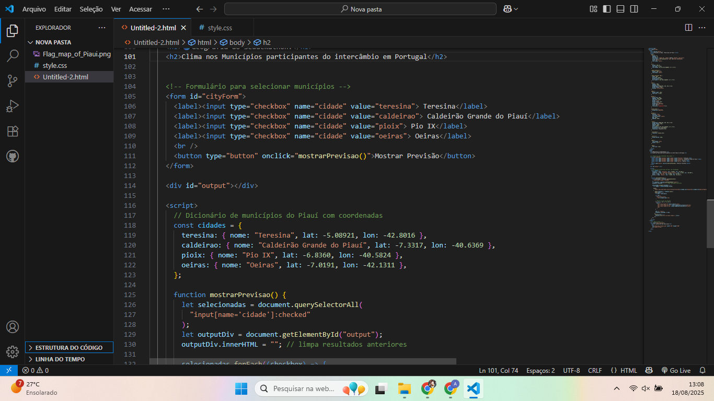

Durante o módulo de Programação Web no TUMO Lisboa, exploramos conceitos fundamentais como HTML, CSS e JavaScript, desenvolvendo projetos interativos que resolvem problemas reais.
Nós aprendemos a construir páginas responsivas, entendemos como a web funciona e praticamos lógica de programação com desafios progressivos.